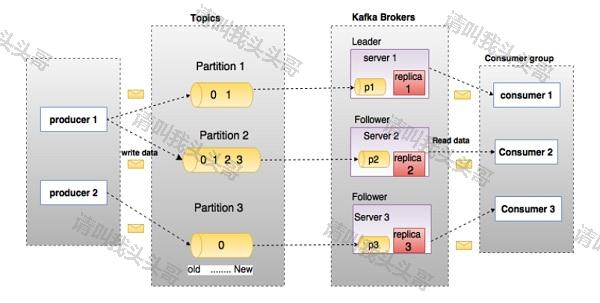
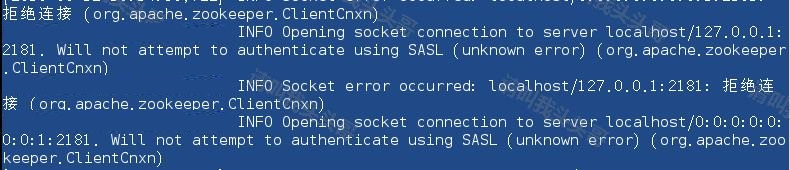
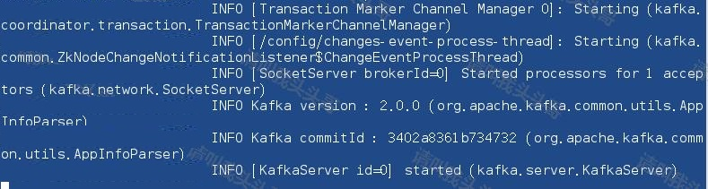
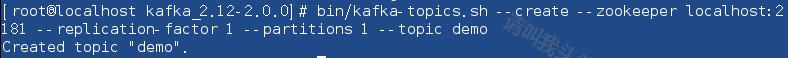
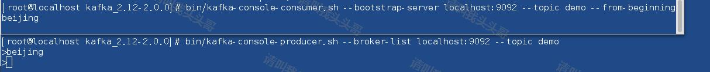

kafka是一个分布式消息队列。具有高性能、持久化、多副本备份、横向扩展能力。生产者往队列里写消息，消费者从队列里取消息进行业务逻辑。一般在架构设计中起到解耦、削峰、异步处理的作用。kafka对外使用topic的概念，生产者往topic里写消息，消费者从读消息。为了做到水平扩展，一个topic实际是由多个partition组成的，遇到瓶颈时，可以通过增加partition的数量来进行横向扩容。单个parition内是保证消息有序。每新写一条消息，kafka就是在对应的文件append写，所以性能非常高。
什么是消息队列（Message Queue）？
消息(Message)
网络中的两台计算机或者两个通讯设备之间传递的数据。例如说：文本、音乐、视频等内容。
队列(Queue)
一种特殊的线性表（数据元素首尾相接），特殊之处在于只允许在首部删除元素和在尾部追加元素。入队、出队。
消息队列(MQ)
消息+队列，保存消息的队列。消息的传输过程中的容器；主要提供生产、消费接口供外部调用做数据的存储和获取。
MQ分类
MQ主要分为两类：点对点(p2p)、发布订阅(Pub/Sub)
共同点：
消息生产者生产消息发送到queue中，然后消息消费者从queue中读取并且消费消息。
不同点：
p2p模型包括：消息队列(Queue)、发送者(Sender)、接收者(Receiver)
一个生产者生产的消息只有一个消费者(Consumer)(即一旦被消费，消息就不在消息队列中)。比如说打电话。
Pub/Sub包含：消息队列(Queue)、主题(Topic)、发布者(Publisher)、订阅者(Subscriber)。每个消息可以有多个消费者，彼此互不影响。比如我发布一个微博：关注我的人都能够看到。
那么在大数据领域呢，为了满足日益增长的数据量，也有一款可以满足百万级别消息的生成和消费，分布式、持久稳定的产品——Kafka。
在要了解Kafka之前，必须先了解主题，经纪人，生产者和消费者等主要术语。 下图说明了主要术语，表格详细描述了图表组件。如已了解的可以跳过此部分。

在上图中，主题配置为三个分区。 分区1具有两个偏移因子0和1.分区2具有四个偏移因子0,1,2和3.分区3具有一个偏移因子0.副本的id与承载它的服务器的id相同。
假设，如果主题的复制因子设置为3，那么Kafka将创建每个分区的3个相同的副本，并将它们放在集群中以使其可用于其所有操作。 为了平衡集群中的负载，每个代理都存储一个或多个这些分区。 多个生产者和消费者可以同时发布和检索消息。
Topics（主题）:每条发布到Kafka集群的消息都有一个类别，这个类别被称为topic。（物理上不同topic的消息分开存储，逻辑上一个topic的消息虽然保存于一个或多个broker上但用户只需指定消息的topic即可生产或消费数据而不必关心数据存于何处）
Partition（分区）:parition是物理上的概念，每个topic包含一个或多个partition，创建topic时可指定parition数量。每个partition对应于一个文件夹，该文件夹下存储该partition的数据和索引文件
Partition offset（分区偏移）:每个分区消息具有称为 offset 的唯一序列标识。
Replicas of partition（分区备份）:副本只是一个分区的备份。 副本从不读取或写入数据。 它们用于防止数据丢失。
Broker:Kafka集群包含一个或多个服务器，这种服务器被称为broker
Brokers（经纪人）:代理是负责维护发布数据的简单系统。 每个代理中的每个主题可以具有零个或多个分区。 假设，如果在一个主题和N个代理中有N个分区，每个代理将有一个分区。假设在一个主题中有N个分区并且多于N个代理(n + m)，则第一个N代理将具有一个分区，并且下一个M代理将不具有用于该特定主题的任何分区。假设在一个主题中有N个分区并且小于N个代理(n-m)，每个代理将在它们之间具有一个或多个分区共享。 由于代理之间的负载分布不相等，不推荐使用此方案。
Kafka Cluster（Kafka集群）:Kafka有多个代理被称为Kafka集群。 可以扩展Kafka集群，无需停机。 这些集群用于管理消息数据的持久性和复制。
Producers（生产者）:生产者是发送给一个或多个Kafka主题的消息的发布者。 生产者向Kafka经纪人发送数据。 每当生产者将消息发布给代理时，代理只需将消息附加到最后一个段文件。 实际上，该消息将被附加到分区。 生产者还可以向他们选择的分区发送消息。
Consumers（消费者）:消费消息。每个consumer属于一个特定的consumer group（可为每个consumer指定group name，若不指定group name则属于默认的group）。使用consumer high level API时，同一topic的一条消息只能被同一个consumer group内的一个consumer消费，但多个consumer group可同时消费这一消息。
Consumer Group(消费者组):是逻辑上的概念，是Kafka实现单播和广播两种消息模型的手段。同一个topic的数据，会广播给不同的group；同一个group中的worker，只有一个worker能拿到这个数据。换句话说，对于同一个topic，每个group都可以拿到同样的所有数据，但是数据进入group后只能被其中的一个worker消费。group内的worker可以使用多线程或多进程来实现，也可以将进程分散在多台机器上，worker的数量通常不超过partition的数量，且二者最好保持整数倍关系，因为Kafka在设计时假定了一个partition只能被一个worker消费（同一group内）。简单的理解就是，实现了队列的方式。同一个groupid 的 consumer 属于一个队列方式，消费了就完事了
Leader（领导者）: Leader 是负责给定分区的所有读取和写入的节点。 每个分区都有一个服务器充当Leader.
Follower（追随者）:跟随领导者指令的节点被称为Follower。 如果领导失败，一个追随者将自动成为新的领导者。 跟随者作为正常消费者，拉取消息并更新其自己的数据存储。
Kafka的特性:
使用场景:
安装Kafka之前，先确认是否已安装Java和Zookeeper
没有安装Java JDK的朋友可以直接看这里。《CentOS安装Java JDK》
没有安装Zookeeper的朋友可以直接看这里。《安装ZooKeeper》
2.1 下载
wget http://mirrors.hust.edu.cn/apache/kafka/2.0.0/kafka_2.12-2.0.0.tgz
如果下载很慢或者不方便，也可以用这里已经下载好的压缩包。链接: https://pan.baidu.com/s/1u8mSfubwZupFqKtK6PH6Qw 提取码: v5em
2.2 解压
tar -xzf kafka_2.12-2.0.0.tgz
注意，kafka_2.12-2.0.0.tgz版本是已经编译好的版本，解压就能使用。
2.3 配置server.properties
默认配置 advertised.listeners=PLAINTEXT://:your.host.name:9092 修改为 advertised.listeners=PLAINTEXT://:ip:9092
ip为服务器ip。
hostname和端口是用来建议给生产者和消费者使用的，如果没有设置，将会使用listeners的配置，如果listeners也没有配置，将使用java.net.InetAddress.getCanonicalHostName()来获取这个hostname和port，对于ipv4，基本就是localhost了。
"PLAINTEXT"表示协议，可选的值有PLAINTEXT和SSL，hostname可以指定IP地址，也可以用"0.0.0.0"表示对所有的网络接口有效，如果hostname为空表示只对默认的网络接口有效。也就是说如果你没有配置advertised.listeners，就使用listeners的配置通告给消息的生产者和消费者，这个过程是在生产者和消费者获取源数据(metadata)。
更多介绍：
# Licensed to the Apache Software Foundation (ASF) under one or more
# contributor license agreements. See the NOTICE file distributed with
# this work for additional information regarding copyright ownership.
# The ASF licenses this file to You under the Apache License, Version 2.0
# (the "License"); you may not use this file except in compliance with
# the License. You may obtain a copy of the License at
#
# http://www.apache.org/licenses/LICENSE-2.0
#
# Unless required by applicable law or agreed to in writing, software
# distributed under the License is distributed on an "AS IS" BASIS,
# WITHOUT WARRANTIES OR CONDITIONS OF ANY KIND, either express or implied.
# See the License for the specific language governing permissions and
# limitations under the License.
# see kafka.server.KafkaConfig for additional details and defaults
############################# Server Basics #############################
##################################################################################
# broker就是一个kafka的部署实例，在一个kafka集群中，每一台kafka都要有一个broker.id
# 并且，该id唯一，且必须为整数
##################################################################################
broker.id=10
############################# Socket Server Settings #############################
# The address the socket server listens on. It will get the value returned from
# java.net.InetAddress.getCanonicalHostName() if not configured.
# FORMAT:
# listeners = security_protocol://host_name:port
# EXAMPLE:
# listeners = PLAINTEXT://your.host.name:9092
#listeners=PLAINTEXT://:9092
# Hostname and port the broker will advertise to producers and consumers. If not set,
# it uses the value for "listeners" if configured. Otherwise, it will use the value
# returned from java.net.InetAddress.getCanonicalHostName().
#advertised.listeners=PLAINTEXT://your.host.name:9092
##################################################################################
#The number of threads handling network requests
# 默认处理网络请求的线程个数 3个
##################################################################################
num.network.threads=3
##################################################################################
# The number of threads doing disk I/O
# 执行磁盘IO操作的默认线程个数 8
##################################################################################
num.io.threads=8
##################################################################################
# The send buffer (SO_SNDBUF) used by the socket server
# socket服务使用的进行发送数据的缓冲区大小，默认100kb
##################################################################################
socket.send.buffer.bytes=102400
##################################################################################
# The receive buffer (SO_SNDBUF) used by the socket server
# socket服务使用的进行接受数据的缓冲区大小，默认100kb
##################################################################################
socket.receive.buffer.bytes=102400
##################################################################################
# The maximum size of a request that the socket server will accept (protection against OOM)
# socket服务所能够接受的最大的请求量，防止出现OOM(Out of memory)内存溢出，默认值为：100m
# （应该是socker server所能接受的一个请求的最大大小，默认为100M）
##################################################################################
socket.request.max.bytes=104857600
############################# Log Basics （数据相关部分，kafka的数据称为log）#############################
##################################################################################
# A comma seperated list of directories under which to store log files
# 一个用逗号分隔的目录列表，用于存储kafka接受到的数据
##################################################################################
log.dirs=/home/uplooking/data/kafka
##################################################################################
# The default number of log partitions per topic. More partitions allow greater
# parallelism for consumption, but this will also result in more files across
# the brokers.
# 每一个topic所对应的log的partition分区数目，默认1个。更多的partition数目会提高消费
# 并行度，但是也会导致在kafka集群中有更多的文件进行传输
# （partition就是分布式存储，相当于是把一份数据分开几份来进行存储，即划分块、划分分区的意思）
##################################################################################
num.partitions=1
##################################################################################
# The number of threads per data directory to be used for log recovery at startup and flushing at shutdown.
# This value is recommended to be increased for installations with data dirs located in RAID array.
# 每一个数据目录用于在启动kafka时恢复数据和在关闭时刷新数据的线程个数。如果kafka数据存储在磁盘阵列中
# 建议此值可以调整更大。
##################################################################################
num.recovery.threads.per.data.dir=1
############################# Log Flush Policy （数据刷新策略）#############################
# Messages are immediately written to the filesystem but by default we only fsync() to sync
# the OS cache lazily. The following configurations control the flush of data to disk.
# There are a few important trade-offs（平衡） here:
# 1. Durability 持久性: Unflushed data may be lost if you are not using replication.
# 2. Latency 延时性: Very large flush intervals may lead to latency spikes when the flush does occur as there will be a lot of data to flush.
# 3. Throughput 吞吐量: The flush is generally the most expensive operation, and a small flush interval may lead to exceessive seeks.
# The settings below allow one to configure the flush policy to flush data after a period of time or
# every N messages (or both). This can be done globally and overridden on a per-topic basis.
# kafka中只有基于消息条数和时间间隔数来制定数据刷新策略，而没有大小的选项，这两个选项可以选择配置一个
# 当然也可以两个都配置，默认情况下两个都配置，配置如下。
# The number of messages to accept before forcing a flush of data to disk
# 消息刷新到磁盘中的消息条数阈值
#log.flush.interval.messages=10000
# The maximum amount of time a message can sit in a log before we force a flush
# 消息刷新到磁盘生成一个log数据文件的时间间隔
#log.flush.interval.ms=1000
############################# Log Retention Policy（数据保留策略） #############################
# The following configurations control the disposal（清理） of log segments（分片）. The policy can
# be set to delete segments after a period of time, or after a given size has accumulated（累积）.
# A segment will be deleted whenever（无论什么时间） *either* of these criteria（标准） are met. Deletion always happens
# from the end of the log.
# 下面的配置用于控制数据片段的清理，只要满足其中一个策略（基于时间或基于大小），分片就会被删除
# The minimum age of a log file to be eligible for deletion
# 基于时间的策略，删除日志数据的时间，默认保存7天
log.retention.hours=168
# A size-based retention policy for logs. Segments are pruned from the log as long as the remaining
# segments don't drop below log.retention.bytes. 1G
# 基于大小的策略，1G
#log.retention.bytes=1073741824
# The maximum size of a log segment file. When this size is reached a new log segment will be created.
# 数据分片策略
log.segment.bytes=1073741824
# The interval at which log segments are checked to see if they can be deleted according
# to the retention policies 5分钟
# 每隔多长时间检测数据是否达到删除条件
log.retention.check.interval.ms=300000
############################# Zookeeper #############################
# Zookeeper connection string (see zookeeper docs for details).
# This is a comma separated host:port pairs, each corresponding to a zk
# server. e.g. "127.0.0.1:3000,127.0.0.1:3001,127.0.0.1:3002".
# You can also append an optional chroot string to the urls to specify the
# root directory for all kafka znodes.
zookeeper.connect=uplooking01:2181,uplooking02:2181,uplooking03:2181
# Timeout in ms for connecting to zookeeper
zookeeper.connection.timeout.ms=60003.1 启动ZooKeeper
/usr/local/zookeeper-3.4.13/bin/zkServer.sh start
注意，需要先启动ZooKeeper再启动kafka，不然会报错。如下图：

3.2 启动kafka
bin/kafka-server-start.sh config/server.properties

启动Kafka Broker后，在ZooKeeper终端上键入命令 jps,效果如下：
3.2 停止kafka
bin/kafka-server-stop.sh config/server.properties
4.1 创建topic
bin/kafka-topics.sh --create --zookeeper localhost:2181 --replication-factor 1 --partitions 1 --topic demo
其中demo为创建的topic名称。

如上图，创建了一个名为 demo 的主题，其中包含一个分区和一个副本因子。 创建成功之后会输出： Created topic "demo".
如上图，创建主题后，系统会在config / server.properties文件中的"/ tmp / kafka-logs /"中指定的创建主题的日志。
4.2 查询topic列表
bin/kafka-topics.sh --list --zookeeper localhost:2181
4.3 查看topic信息
bin/kafka-topics.sh --zookeeper localhost:2181 --describe --topic demo
4.3 删除topic
bin/kafka-topics.sh --zookeeper localhost:2181 --delete --topic demo
5.1 启动生产者
bin/kafka-console-producer.sh --broker-list localhost:9092 --topic demo
从上面的语法，生产者命令行客户端需要两个主要参数 -
代理列表 - 我们要发送邮件的代理列表。 在这种情况下，我们只有一个代理。 Config / server.properties文件包含代理端口ID，因为我们知道我们的代理正在侦听端口9092，因此您可以直接指定它。主题名称:demo。
5.2 启动消费者
为了方便测试，另启一个sheel窗口 这样效果更明显。需要注意的是旧版本和新版本的命令是不一样的
bin/kafka-console-consumer.sh --zookeeper localhost:2181 --topic demo --from-beginning
报错提示： zookeeper is not a recognized option
发现在启动的时候说使用 --zookeeper是一个过时的方法，最新的版本中命令如下：
bin/kafka-console-consumer.sh --bootstrap-server localhost:9092 --topic demo --from-beginning
可以开启两个终端，一个发送消息，一个接受消息。效果如下：

Kafka是一个统一的平台，用于处理所有实时数据Feed。 Kafka支持低延迟消息传递，并在出现机器故障时提供对容错的保证。 它具有处理大量不同消费者的能力。 Kafka非常快，执行2百万写/秒。 Kafka将所有数据保存到磁盘，这实质上意味着所有写入都会进入操作系统(RAM)的页面缓存。 这使得将数据从页面缓存传输到网络套接字非常有效。
本文中部分内容翻译或借鉴于以下学习资料，特别鸣谢：
作 者：请叫我头头哥
出 处：http://www.cnblogs.com/toutou/
关于作者：专注于基础平台的项目开发。如有问题或建议，请多多赐教！
版权声明：本文版权归作者和博客园共有，欢迎转载，但未经作者同意必须保留此段声明，且在文章页面明显位置给出原文链接。
特此声明：所有评论和私信都会在第一时间回复。也欢迎园子的大大们指正错误，共同进步。或者直接私信我
声援博主：如果您觉得文章对您有帮助，可以点击文章右下角【推荐】一下。您的鼓励是作者坚持原创和持续写作的最大动力！